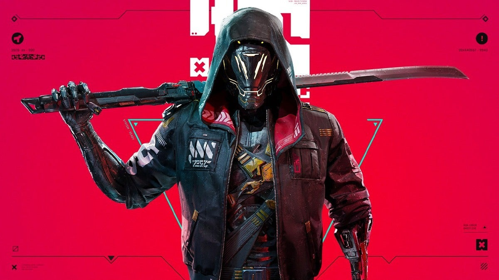
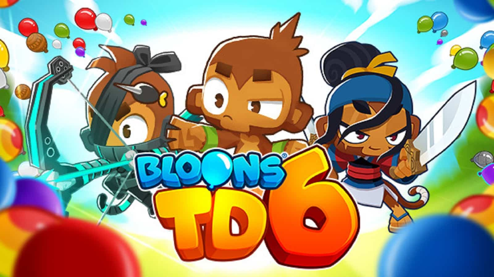
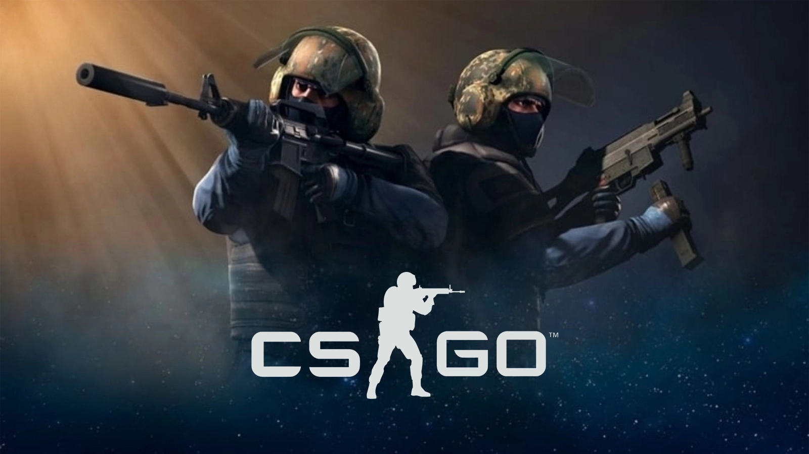
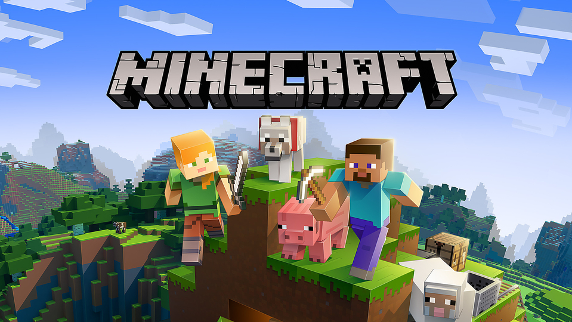
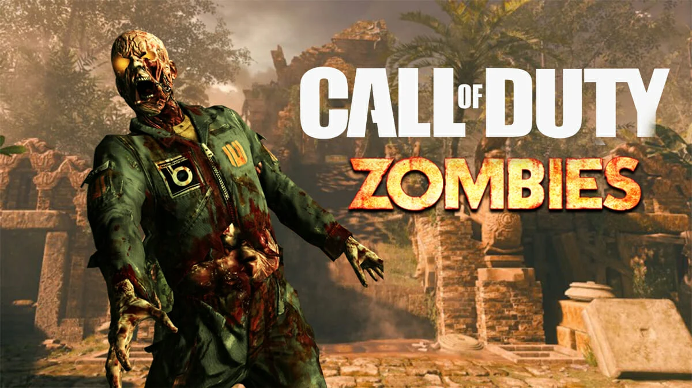
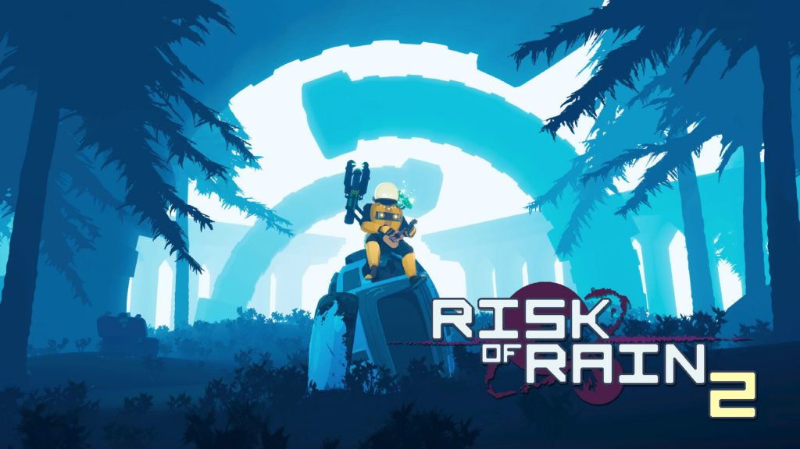

Before getting into the Top 10 list, I'd like to make it clear that these games are based on my opinion and not a set in stone list. If anyone thinks a game should not be on the
list or one should be then feel free to contact me here. These are a collection of my favorite games of all time and you'll see quickly I have a type.
10. "GhostRunner"

Game Type: Cyberpunk Action Platformer
This is a very fun game and was very difficult at times which kept me on my toes. Every level introduced new mechanics and then would through a bunch of them
together for a boss level. Each level was well thoughout and there are tons of shortcuts to take once you get good at the game. The story was also really good and I can't wait
for a sequel.
9. "Bloons TD 6"

Game Type: Tower defense
Bloons TD 6 is a really fun casual game and one of the only tower defence games you can find nowadays. The gameplay is very simple and easy to pick up but there is also a really
large amount of hidden content and stats that more hardcore players could find/use to their advantage. Multiplayer is definitely lacking just because it lags so much which was
disappointing but the game design is just so good that I play with my girlfriend all the time.
8. "Subnautica"
Game Type: Survival Action-Adventure
The thing that comes to mind when playing Subnautica is that it is Minecraft but underwater. However, I feel that this game has so much more to offer with its deep
story, futuristic setting and the whole alien planet aspect. I am a huge fan of good stories when I play games and this one is just leaking story everywhere you go, but don’t
worry I won’t give any spoilers. There is constantly a sense of awe with every new creature and place you find.
7. "Celeste"
Game Type: 2D Platformer
Celeste is another one of those games that has a good story. The story is short yet sweet but the real prize here is the gameplay. This isn’t your little cousins Mario platformer,
this is a crazy difficult time-consuming journey of pain that makes you feel so awesome for beating it. This game does not have insane 3D graphics or anything like that but it
really shows that a game does not need fancy graphics to be enjoyable.
6. "Portal 2"
Game Type: First-Person Puzzle Game
Portal 2 is a great game and for years fans have been waiting for a third game, unfortunately, Value does not seem interested in making said game. The game will make
you think and you will most likely get stuck in some parts but that's the thing with puzzle games, they are the most rewarding when you struggle and finally figure it out.
The concept is amazing, you are giving a “portal gun” that can create two linking portals that you and other objects can move through. I can’t say I’ve seen a concept quite
like this in a while.
5. "Jedi Fallen Order"
Game Type: Action-Adventure
If you like Star Wars you will LOVE Jedi Fallen Order. This game is filled with lore and easter eggs pointing to the entirety of the Star Wars franchise and being able to
actively play a part in the unfolding story is crazy. Just like Portal 2, Jedi Fallen Order has aspects of a puzzle game but it is mainly an epic adventure where you take
on bosses and unlock new abilities as you progress. This game can easily get you upwards of 30 hours if you choose to find every single thing hidden throughout the levels.
I can’t stress this enough if you are a Star Wars fan this is a must-buy.
4. "CSGO"

Game Type: Multiplayer First-Person Shooter
This is one of the games on the list that differs from the majority, CSGO is a multiplayer first-person shooter game that has become a cult classic. The game out in
2012 and is still massively popular to this day. It is fun yet frustrating to play competitively, I can’t even begin to tell you about the countless nights at 2 am playing with
all my friends and just laughing and having a blast even when we are losing 16-0. There are tons of different things you can do in the game thanks to the online workshop and you
can even play game modes that are nowhere near what CSGO was meant to be. I honestly love this game and keep coming back to it over and over again.
3. "Minecraft"

Game Type: Sandbox
This list just would not be complete without Minecraft. Minecraft is a staple of gaming and is now the number one best-selling game in the world, even beating out Tetris. I grew
up playing Minecraft so I might be a little bit biased about it but that still does not change the fact that some of my favourite memories gaming come from this game. Honestly, I
think the biggest reason for the success of this game is its blankness. You can do anything you want, you can build anything you want, you can play with friends or you could troll
your friends. There are genuinely limitless possibilities when it comes to playing Minecraft and the fact that it is over 10 years old now and still the best-selling game in the
world really shows how good it is.
2. "Black Ops Zombies"

Game Type: Roguelike First-Person Shooter
I would not say this is just one game, Call of Duty Zombies is an entire franchise with a story that branches upwards of 6 games. The zombies storyline is hands
down my favourite out of any game I've ever played, even outshining most movies. There is so much going on and so many little things to find while playing that I always got so
excited for new content. There are multiple dimensions, time travel, alternate universes and even powerful gods within the story. I can express my love for this game enough and
the only reason it is not number one is that the most recent games have been a major let down and have put me off of the series entirely.
1. "Risk of Rain 2"

Game Type: Roguelike Third-Person Shooter
Ah, Risk of Rain 2. In many ways, this is very similar to zombies and probably why it is my number one. It has an amazing story that is hidden in little easter eggs, it has
awesome gameplay which has some of the best replay value I’ve ever seen and most importantly it is just fun. This game offers so much and it comes from just 4 developers
(recently they hired 2 more). I’ve never been into third-person games but Risk of Rain 2 offers so much more of what I love when it comes to games I got over that and it now
stands as my number one. I highly recommend this game to anyone and everyone, I even got my girlfriend to play it and now it is her favourite too.